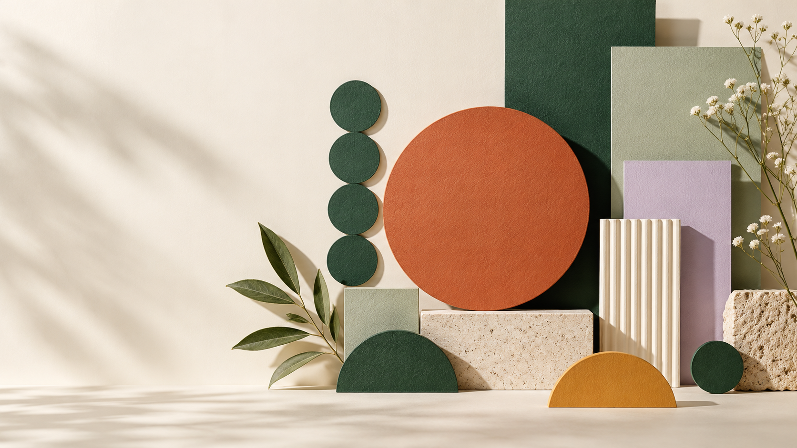

In my portfolio, design principles help me organise visual elements, establish a clear message and guide the viewer through my work.

Balance, contrast and visual relationships
Balance
Balance is the distribution of visual weight. Size, colour, value, texture and position can make an element feel heavier or lighter. Symmetrical balance mirrors weight across an axis; asymmetrical balance uses different elements to create equilibrium; radial balance organises elements around a centre.
In my portfolio: My two-column layouts balance imagery with text. In my Girl and House composition, the figure and building occupy different areas rather than forming a mirror image.
Contrast
Contrast is a noticeable difference between elements, such as light and dark, large and small, thick and thin, or smooth and textured. It separates information and creates emphasis. Contrast should support a clear reading order rather than make every item compete equally.
In my portfolio: The bright fruit in my Basket of Fruits composition stands out against its dark background. My portfolio uses dark text on cream to make explanations readable.
Alignment
Alignment places elements along a shared edge, centre or baseline. Left, right and centred alignment create different effects; a grid can coordinate multiple columns. Deliberate alignment creates relationships even when objects are far apart.
In my portfolio: My headings and paragraphs share a left edge. Aligning the image and explanation within an artefact card makes each project easier to scan.
Repetition
Repetition reuses a visual feature, such as a colour, typeface, shape or spacing interval. It creates consistency and recognition across a composition or a series of pages. Small variations can retain interest within a repeated system.
In my portfolio: I repeat my logo, cream background, green text and heading styles throughout my portfolio so the pages feel connected.
Proximity
Proximity groups related elements by placing them close together. A larger gap separates unrelated groups. It helps a viewer understand relationships without extra boxes or lines; the spacing within a group should usually be smaller than the spacing between groups.
In my portfolio: I keep each artefact image near its title, software name and description, while leaving more space before the next project.
Emphasis, organisation and visual flow
Emphasis
Emphasis establishes a focal point: the part a viewer should notice first. Isolation, contrasting colour, size, position or detail can attract attention. A clear dominant element gives supporting information a role.
In practice: The yellow door in my House with Lines illustration contrasts with the surrounding walls and becomes a noticeable accent.
Hierarchy
Hierarchy gives information levels of importance. Scale, weight, colour, placement and spacing can establish a title, a supporting heading and body text. It answers what to read first, second and third.
In practice: On my pages, the large title introduces the subject, section headings organise topics and smaller paragraphs explain the detail.
Scale and proportion
Scale concerns size relative to another object or the viewing context. Proportion concerns the size relationships between parts. Changing either can suggest importance, distance or a deliberate exaggeration.
In practice: In my Girl and House composite, the larger foreground figure and the building behind her create a sense of depth.
Movement
Movement is the route a viewer's eye follows through a composition. Lines, curves, diagonals, repeated shapes and directional cues can lead attention. Visual movement can exist in a completely static image.
In practice: I use the order of headings, examples and page buttons to guide a viewer from an idea to its application.
Rhythm and pattern
Rhythm is a visual pace created by repeating and varying elements. It can be regular, alternating, progressive or flowing. A pattern is a repeated arrangement; rhythm describes the sense of pace or movement that arrangement produces.
In practice: Repeated window panes in my house drawing form a pattern. Repeated cards and consistent section spacing give my portfolio a predictable visual rhythm.
Unity and harmony
Unity makes the parts of a design feel like a coherent whole. Related colours, consistent styling, common shapes and suitable imagery can create harmony. Unity concerns the relationship between the parts, rather than making every part identical.
In practice: My recurring palette, logo and page structure connect different topics while allowing each page to have its own examples.
Variety
Variety introduces controlled differences in colour, shape, size or composition. It adds interest and helps distinguish information. The variations should remain connected to the overall purpose so that the result feels intentional.
In practice: My portfolio combines photographs, geometric diagrams and colour palettes, while keeping a consistent type and colour system.
White space
White space, or negative space, is the area around and between elements. It does not have to be white. It separates groups, reduces crowding and gives an important subject room to stand out.
In practice: I leave space around headings, images and paragraphs to help readers focus on one section at a time.
Visual hierarchy in action
This demonstration uses a large title to establish emphasis. A smaller subtitle provides context, while the smallest line supplies detail. All text shares a left edge, related content is grouped, and a single accent colour links the subtitle to the visual identity.
How to evaluate a composition
Balance: does one side feel unintentionally heavier?
Contrast: can the important message be distinguished immediately?
Alignment: do elements follow deliberate edges or axes?
Repetition: are headings, colours and spacing consistent?
Proximity: are related details together and separate groups clearly spaced?
Hierarchy: is there a clear first, second and third reading level?
These principles interact. Increasing contrast can create emphasis, while consistent alignment and repetition can support unity. They are tools for making purposeful choices rather than rules requiring every design to look identical.
Three approaches to balance
Type
How it works
Suitable application
Symmetrical
Similar visual weight appears on opposite sides of an axis.
Formal layouts, stable compositions and paired information.
Asymmetrical
Different shapes, sizes or colours are arranged to feel balanced.
Dynamic editorial layouts and figure-and-background compositions.
Radial
Elements spread out from or circulate around a centre.
Circular emblems, rosettes and a colour-wheel arrangement.
Gestalt: how I organise visual relationships
Gestalt principles describe how viewers perceive groups and whole forms. They help explain why a layout can communicate relationships before its text is read.
Relationship
What a viewer perceives
Design application
Similarity
Items with shared visual features appear related.
I use consistent styles for controls with the same purpose.
Proximity
Nearby items appear to belong together.
I group an image with its own caption.
Continuation
The eye follows an apparent line or path.
Aligned edges guide readers down a page.
Closure
The mind can complete a partly implied shape.
A simplified symbol can remain recognisable without a full outline.
Figure and ground
A subject is perceived in relation to its surrounding space.
Clear background contrast separates a logo or heading.
Symmetry and order
An ordered arrangement is perceived as a connected structure.
A consistent grid supports predictable reading.
Grids and composition
A grid is an underlying structure for aligning and spacing content. I use columns for comparisons and a single reading column when explanations need more room. A modular grid divides the page in both directions; a baseline grid aligns lines of type. These structures support consistency without requiring every page to have identical content.
The rule of thirds divides a composition into three rows and three columns. Positioning a subject near an intersection can create an off-centre focal point. It is a useful starting point to evaluate, rather than a requirement for every design.